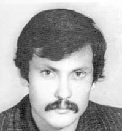
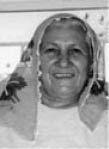

“Devletin Önce İdam Edip Sonra Kaybettiği Başka Bir Kişi Yok.”
Doğan Güney17
Amcam Veysel Güney, Malatya Hekimhan doğumlu. Liseyi İzmir’de bitirdikten sonra İskenderun’da makine bölümünü bitirmiş. Demir-Çelik’te elektrik üzerine çalışıyormuş. 9 kardeştiler. Devrimci Yol örgütünde mücadele veren bir devrimciymiş.
Malatya’da Yaşam...
Daha öncesinde Malatya’da bir mücadele söz konusu değilmiş. Köy olduğu için orada kendilerini geliştirme imkânları yok, biraz kısıtlı bir alan, çobanlık yaparak kırsalda hayatını sürdürebilecek şekilde yaşıyorlarmış. Aile de zaten çok kalabalık. Tek evde 30 kişilik bir aileyi düşünün, o zaman dedem kardeşleriyle birlikte aynı evde yaşıyor. Daha sonrasında okulunu okuyan, farklı yerlerde çalışmak isteyenler köy dışına gidiyorlar. Amcam da bu şekilde ilkokulu köyde okuyup daha sonrasında farklı illere gidip okulunu tamamlayıp ardından aktif mücadeleye, Devrimci-Yol’a giriyor.
Operasyon...
Gaziantep’te 28 Aralık 1980 tarihinde Ali İhsan Özer ile birlikte kaldığı ev, asker ve polislerce basılıyor. Çatışma esnasında Ali İhsan Özer ölüyor, amcamsa yaralı olarak yakalanıyor. Bu arada Teğmen Şahin Akkaya da hayatını kaybediyor. Amcam yakalandıktan sonra gözaltına alınıyor, kendisine avukat verilmiyor ve sürekli olarak işkenceye tabi tutuluyor. Askeri, amcamın öldürdüğünü söylüyorlar; ancak amcam hiçbir şekilde bunu kabul etmiyor. Dedemlere yazmış olduğu mektupta da “Ben kimseyi öldürmedim!” diyerek bunu açıkça dile getiriyor.
Elimizdeki belgelerde operasyonun yapıldığı binanın krokisi var. Neredeyse dört yüz sayfalık tutanağın içinde yer alıyor. Bu belgelerin tamamının aslı gibidir halini avukatlar aracılığıyla elde ettik. İncelediğimizde amcamın olduğu oda ile, öldürdüğü iddia edilen askerin arasında herhangi bir bağlantı olmadığını gördük. Bir koridor düşünün, koridorun ortasında askerler var, koridorun sonunda amcam ve Ali İhsan Özer var. Diğer tarafta, polisin bulunduğu kısmın arka tarafındaki balkonda da öldürülen kişi. Amcamın oradan oraya geçebilmesi veya oradan oraya kurşun işleyebilmesi için o kadar polisin, askerin içinden geçip vurup tekrar geri gelmesi lazım. Bu olanaksız bir şey, mantıken de olanaksız, ki amcamların olduğu yerde ışık yanıyor, polisler karanlıktan ışığa doğru ateş ediyorlar. Amcamın karanlıkta direkt gidip de o askeri vurabilmesinin imkânı yok. Krokide de bu durum açıkça gözlenebiliyor. Uzak bir mesafe, bir binanın iki yüzü gibi düşünebilirsiniz, bir tarafında ölen kişi var, bir tarafında da amcamların olduğu bir bölüm. Aralarında herhangi bir bağlantı yok. Amcam, bu yapılan operasyonda yaralanıyor ve 2 kurşun alıyor bedenine, hastaneye götürülmeden önce de işkence görüyor.
Ailem Radyodan Duyuyor
Amcam yakalandığında ailemizdekilerden bazıları radyodan duyarak haberdar oluyor. Daha sonrasında dedemi de karakola çağırmışlar ve amcamın yakalandığını kendisine söylemişler. Amcam avukat talebinde bulunduğu halde bu talebi karşılıksız kalıyor ve bir şekilde avukatsız olarak yargılanmasına devam ediliyor. Zaten aileme de amcamın avukat talebinde bulunduğu iletilmiyor. Kendi el yazısı ile dilekçe yazmış; fakat bu talep işleme koyulmamış. Bunu da yine belgelerden öğreniyoruz, bunlar da mahkeme tutanağında yer alıyor. Bu mektuplar ailenin eline daha yeni geçiyor. Son mektubunu da mezarını ararken ulaştığımız belgelerle birlikte geçtiğimiz 3-5 yıl içinde bulduk.
Dedem, babaannem ve babam Antep’te amcamla görüşmek istiyorlar son bir kez olsun. Yaklaşık bir dakika, idam yerine götüreleceği aracın içerisinde gösteriliyor amcam. Babam “Ne mutlu ki inandığın yolda canını seve seve veriyorsun, bir gidip bin geleceksin...” diye slogan atıyor, sonra “Bunu da içeri atın!” diye oradaki komutan emir veriyor. Babamın slogan atması sonucu babamı da içeri alıyorlar. İdama götürülen oğullarını görmeye gitmişken babam da tutuklanınca, babaannemler daha çok perişan olmuşlar. Böyle apar topar gelişen bir süreç.
Amcamın yakalandığı tarih 28 Aralık 1980. 14 Mayıs 1981’de idam cezası veriliyor ve infazı da 6 Haziran da Resmi Gazete’de yayımlanmasından hemen sonra 10 Haziran saat 3:00’da yapılıyor. Amcamın yakalanmasıyla infaz edilmesi arasında 5 aylık bir süre var. Bu süreçte de avukat verilmiyor. Amcam avukat talebinde bulunmasına rağmen bu talep değerlendirmeye alınmıyor. Zaten idam edildiğinde üzerinde hâlâ 28 Aralık’taki çatışmadan kalan kurşunlar varmış, vücudundaki kurşunlar bile çıkarılmamış. O şekilde idama götürülmüş. Amcam bir üsteğmeni öldürmekle suçlanıyor. Fakat evin krokisi incelendiğinde çatışmanın yaşandığı alan ile üsteğmenin ölmüş olduğu alanın herhangi bir fiziki bağlantısı bulunmuyor. Davada görevli olan savcı Mete Göktürk de yazmış olduğu kitapta “Delil yoktu” diye bunu ortaya koymuştu. Kısacası amcamın dosyasını Dev-Yol davasından ayırıp hızlıca idam edecekleri kesinmiş, yeterli altyapıyı oluşturmak için suçlamaları kabul etttirmeye çalışmışlar. Davayı Dev-Yol ana davasından ayırdıktan sonra süreci hızlandırmışlar zaten idam kararı kısa sürede çıkmış. Sonucunda düzmece bir sistemle de idamı gerçekleşmiş. Zaten beş aylık bir süre içerisinde bir insanın yakalanması, yargılanması ve infaz edilmesi hangi yasada yer alabilir ki? Orada amaç sol görüşlü, devrimci insanları yıldırmak, birini tez elden öldürüp sizin de sonunuz böyle olur diye gözdağı vermek. İlk etapta bir kurban niyetine seçilmiş diyebiliriz kısacası.
Komutan Burhan Erdem’e, “Naaşın ailesine, babası Ali Güney’e teslim edilmesiyle...” ilgili bir karar, bir yazı çıkartılıyor. Burhan Erdem bu kararı imzalamasına rağmen, dedeme, bize herhangi bir şekilde amcamın bedenini geri vermiyor. Şu anki dava süreçlerinin temel ekseni de bu olay üzerinden gerçekleşiyor. Bir şekilde biz hâlâ elde etmek istiyoruz, onlar da vermemekte diretiyor veya bir karışıklık, bir çelişki ortaya çıkarmaya çalışıyorlar. Dava hâlâ devam ediyor.
Önce İdam Ediliyor, Sonra Kaybediliyor
Benim birinci dereceden tanıdığım, devletin idam edip de sonradan kaybettiği başka bir kişi yok. Biz Antep’te gömüldüğünü biliyoruz ama bugüne kadar amcamın nereye gömüldüğünü tespit edemedik. Bu 5 senelik süreç içerisinde açtığımız davalarda bize verilen evrakla Mezarlıklar Müdürlüğü’ne başvurduğumuzda 10 Haziran 1980’de gelen cenazeler içinde kayıt numarası olarak, geliş yeri Orduevi ve ölüm sebebi idam olarak gelen tek bir kişi var. Gömüldüğünü düşündüğümüz yerlerdeki mezar açıldı, kemiklere birden fazla DNA testi yaptırdık, bunun sonucunda da bulunamadı ve bir şekilde devletin müdahalesiyle herhangi bir sonuca ulaşamadık. Şu anda mezar yerine dair herhangi bir belge yok. Babamla yapılan DNA testinde %50’nin üzerinde uyum sağladı; fakat daha sonra dedem, babaannem ve amcamla DNA testi yapılınca bu oran çok fazla düştü. Babamla %50’nin üzerinde eşleşip daha sonrasında bu oranın tekrar dedem ve babaannemle yarı yarıya düşmesi burada bir çelişki olduğunu gösteriyor zaten. Bu olaydan sonra yaptırdığımız diğer DNA testlerinden de bir sonuç alamadık. Şu anda da çalışmalar devam ediyor. Gerekirse anıt mezar yapılması, gerekirse tekrardan DNA testleri yapılması yönünde çalışmalar yürütüyoruz.
Aslında karaladılar bir şekilde orada. Bu dava, daha öncesinde televizyonlarda ve farklı platformlarda yayınlandığı için oranın bir anıt mezar olmasından, sonuçta 1980 döneminde Devrimci-Yol’dan ilk idam edilen kişi olduğu için oranın bir şekilde ön plana çıkmasından veya Deniz Gezmişler gibi mezarlarının her zaman anılma yeri olmasından korktukları için bu tür bir plan düzenlenmiş diye düşündük biz daha doğrusu. Çünkü verilmemesinin başka bir sebebi olamaz. Amcamı idam eden komutan belli, Burhan Erdem teslim alan. Orada amcamı idam eden kişiler, cenazesinde imam istemediği için mundar gitti gibi cümleler de kullanmışlar, ne amaçladıklarını göstermişler sonuçta.
DNA testini tekrarlamak için bağımsız bir yer aranması çalışmaları var. İlk etapta mezarın açılması aşamasında Mersin Devrimci 78’lilerin başkanı vardı, babam gitti. Diğer akrabalardan, kuzenlerimizden gidenler oldu. Biz bu arada kemiklerin kaybedildiğini, bir şekilde ortadan kaldırıldığını düşündük.
Burhan Erdem’in Davası...
Konuyla ilgili dava açıldı. Burhan Erdem’in ifadesi alındı. Burhan Erdem herhangi bir şekilde bana teslim edilmedi, benim bilgim yok diye beyanat verdi. Yazılı karar bu şekilde geldi bize. Geçen yıldı sanırım. Bu yıl içerisinde halam yeni bir dava açmıştı. Onun da sonucu yaklaşık 2-3 ay önce geldi. Kendisinin bilgisi olmadığını söylüyor, imzayı atmış ama. Her şey bir ortaoyunu gibi. Şu anda bize gelen sonuç bu şekilde. Biz şu an, Burhan Erdem’in adresini, çoğu bilgilerini biliyoruz kaldı ki, devletten maaş alan birinin yerini devlet, bilmiyoruz dedi daha öncesinde. Devrimci 78’liler buldu, dava açıldı, süreç işledi; fakat Burhan Erdem, bilmiyorum dedi. Bilmiyorum diyerek bir işin içinden bu adalet sisteminde çıkılabiliyorsa, biz bunun peşini bırakmazsak en azından rahat etmez diye düşünüyoruz. Bizim mücadelemizin amacı bu. Benim ailem nasıl 1980’den beri hâlâ bu acıyı yaşıyorsa bir şekilde onun ailesi de, çoluğu çocuğu da dışarıda rahat etmeyecek. Bu bizi mutlu etmeyecek ama en azından o da rahat etmeyecek. Aynı şekilde Kenan Evren, Tahsin Şahinkaya ve bu şekilde yargılanacak tüm belli başlı kesimlerin rahat etmemesi önemli yoksa bu adalet sisteminde ceza alacağı, hapse gireceği yok... Şöyle bir şey var, kınama cezası bile alsa, toplumun gözünde bunların itibarlarının düşürülmesi önemli. Yeni açılan okullara hâlâ bu kişilerin isimleri verilebiliyorsa toplumun bakış açısında pek bir değişiklik yok demektir. Bizim asıl hedefimiz toplum nezdinde bunların ortaya çıkması. Bu adam iyi bir şey yapmadı arkadaş. Hâlâ çıkıp da ben yine olsa yine aynısını yaparım, diyebiliyorsa, toplum da bunu destekleyebiliyorsa sistemde bir yanlışlık var demektir. Bizim amacımız bir şekilde insanların, bir kişi olsa bile, bunu öğrenmesi. Bu adamın yaptığı şeyler, bunun gibilerin yaptığı şeyler normal şeyler değil. Bizim asıl hedefimiz bu. Biz bu yönde aktif olarak çalışıyoruz.
Amcamı Öğreniyorum...
Amcamı ve geçmişimizi ilkokuldan itibaren öğrenmeye başlamıştık. Bizim büyüdüğümüz dönemde artık çok fazla konuşulmuyordu bu meseleler. Fakat ikilemlerimiz olmadı hiç. Daha çok olmayan adaletle ilgili birçok çelişki ve sorgulamalarımız oldu. Nasıl olabilir, insanın aklına, mantığına aykırı bir durum diye düşündük. Olan çelişkiler bunlar. Yoksa biz hiçbir zaman amcamın yaptığı eylem ve faaliyetlerden kuşku duymadık. Bir devrimci insan, kararlı bir şekilde cesaretle o mücadeleye girmişse, yaptığı mücadelenin doğru olduğunu düşünüyordur, ki şu anda biz de öyle düşünüyoruz. Amcam yazdığı mektupta da dedeme seslenirken, yani babasına, ben yanlış bir şey yapmadım diyor. Biz de biliyoruz, biz de yanlış bir şey yapmıyoruz, amcam da yanlış bir şey yapmadı. Çelişkiye düşsek, geçmişimizle, ailemizle ilgili olan şeylerle de çelişmiş oluruz. Bu yüzden biz, amcamın inancında, mücadelesinde devam ediyoruz.
Topluma kızgınlığım tabii ki oldu, kimin için mücadele verildi ve kimler artık bunları sahiplenmiyor, desteklemiyor diye bakarsak aslında... Toplum için bu kızgınlık ve öfke düşünülebilir. Benim çevremde düzgün insanlar olduğu için ben çevreden gelebilecek baskılarla hiç karşılaşmadım. Fakat mesela Meral halam, amcamın ölümünden bir yıl sonra Merkez Bankası’nda işe giriyor. Amcamı inceliyorlar temiz kâğıdından, ondan sonra da halama çıkış kâğıdını veriyorlar. Temiz kâğıdın temiz gelmedi diyorlar. Zaten o zamanlarda bütün geçmişi, yakınlarına kadar, inceleniyordu insanların. Fişleme hâlâ mevcut; fakat o dönem daha da belirgin. Okuduğumuz yerlerde ve diğer tanıdıklarımızdan, o

Veysel Güney
dönemi yaşayanlardan duyduklarımız da hep bu şekilde.
Cumartesi Anneleri içinde tanıdıklarımız var mesela. Onlar bu mücadelenin içerisinde. Biz her hafta oraya gidemediğimiz için onlar bizim yerimize de orada yer alıyorlar. Gerek İzmir’de, gerek Ankara’daki Utanç Müzeleriyle, Devrimci 78’liler içerisinde faal olmaya çalışıyoruz.
Üniversite Dönemim...
Ben Edebiyat Fakültesi’nde okuduğum için 12 Eylül’ü bilmeyen çok nadirdir. Veya okulu bitirdikten sonra bilmeyen çok nadirdir. Çünkü siyasetin aktif olarak yaşandığı bir alan sosyal bilimler. Üniversite yaşamında da birden fazla yere girip çıktım siyasi olarak. Benim çağdaşım olarak üniversitede olanlardan, en azından benim fakültem için ben hâlâ umut var, diyorum; fakat diğer fakülteler için sıkıntı var diyebilirim.
Biz illaki şu zamanda olacak, bu zamanda olacak diye bir mücadeleye hiç başlamadık. Her şey bir süreçtir. Elimizden geleni gerektiği gibi yaparsak zaman içerisinde amaçladığımız, inandığımız şeye yaklaşırız diye düşünüyoruz. Bu yüzden yüzleşme dediğimiz kısa zaman diliminde olacak bir şey değildir çünkü hiçbir zaman bir anda olan bir şey değildir devrim. Başarı elde edilecektir. Ki, elde edilmeyeceğini düşünsek umudu kaybetmişiz demektir. Umudumuzu kaybetmiş değiliz.
Bu Gerçekle Yaşamak
Ben şu an amcamın idam edildiği yaştayım. Amcam 24 yaşında idam edildi. Babaannem vefat ederken, son nefesinde bile amcamın mezarını görmek, duasını etmek istiyordu. Vasiyetinde de amcamın kalan eşyalarının yanında gömülmesini istemiş. Bunu da kardeşine söylemiş; fakat cenaze üzüntüsüyle unutulmuş. Biz bunu sonradan öğrendiğimiz için gerçekleştiremedik. Babamın yaşadığı acıyı en yakınındakiler olarak görebiliyoruz, bizler ailecek bu acıyı yaşıyoruz zaten. Amcamın mezarını bile bize çok gören bir sistemde yaşıyoruz. Babaannem oğlumun bir mezarı bile yok, bir defa daha koynuma alsaydım, kokusunu çekseydim içime diyerek gözlerini yumdu. Bir anne düşünün 24 yaşındaki oğlunu elinden alıyorlar ve bir daha göstermiyorlar, mezarına bile gidemiyor. Bu annenin öfkesidir önemli olan, bu öfkeyi yaşamak var... Bir oğul elinden alınıyor, diğeri gözaltına alınıyor. Biz hâlâ bu durumu göğüsleyebildik diyemiyoruz. Biz sadece bu acıyla yaşamaya devam ediyoruz. Bir şekilde birlikteyiz. Babam olsun, dedem olsun, ailedeki diğer bireyler olsun, şu anda hâlâ bunun acısı yaşanıyor, bir şekilde de yaşanmaya devam edecek.
12 Eylül’de içeriye girip de şu anda sağlığını normal devam ettiren kişi sayısı çok az. Ama amcam cesaretinden dolayı öldü. Normal şartlarda amcam isim vermiş olsaydı belki şu an yaşıyor olabilirdi ama bir şekilde cesaretini, iradesini toplayıp arkadaşlarını ele vermedi. Ki amcamı ele veren kişiler vardı, tutuklandığı eve ihbar üzerine baskın yapılmıştı. Ben daha çok şu anda yaşıyor olsaydı, kendisi ne düşünürdü diye daha çok merak ediyorum. Daha doğrusu şu an toplumu, çevresini görünce bu onun düşüncelerine ne şekilde yansırdı? Bunu sorguluyorum.
Amcamı kahraman olarak nitelendirmiyorum. Bilinçli bir insan bildiğim kadarıyla, çevremden, babamdan duyduklarım kadarıyla. Kahramanlık medyatik bir tabir, biraz farklı bir boyut, biraz daha şovenist bir yaklaşım. Amcam kendini bu şekilde nitelendirmemiş. Hiçbir yerde kendini övücü bir ifade kullanmamış, söz konusu değil. Kahraman diye nitelendirip o başlık altında kısıtlamak, sınırlandırmak bence çok yanlış. Sadece amcam olması söz konusu değil, bütün devrimcilerin; Mahir Çayan olabilir, Kaypakkaya olabilir, diğerleri için de aynı şekilde.
Amcamı anlatmam gerekse inançlı ve umutlu derdim, dev-

Veysel Güney’in annesi
Zeynep Güney
rime umutlu ve inançlı. 1980 ve 1970’ler zamanında bu mücadeleye girişip inançlı olmayan ve umutlu olmayan hiç kimse yoktur, yoksa mücadeleye girmezlerdi zaten.
Bu süreç, başarmak konusunda belki de bizim daha inatçı olmamızı sağladı diyebilirim. Sonuçta bir mücadele verilmiş. Bir şekilde o mücadelede bizlerden biri gitmiş. Bu yüzden mücadelede belki biraz daha inatçı, biraz daha ısrarcı olmuş olabiliriz. Hayatımızı belki bu şekilde daha iyi şekillendirmiş olabiliriz.
İdamı Geri Getirelim Diyor Birileri...18
Darbeden etkilenmemiş hiç, gül gibi yaşamış adam. İnsan öldürmek onların gözünde herhangi bir şey ifade etmiyor. Ne olursa olsun bir insanın ölmesi veya bir insanın ortadan kaldırılması hiçbir şekilde insan haklarına uymaz, kişinin en doğal hakkıdır yaşamak. İdam getirilmesi konusunda diyor ki, gelişmiş bir ülke olan ABD’de mevcut, gelişmiş ülke olma kıstası nedir, onun gelişmişliğini neyle, idam cezasının var olmasıyla mı ölçüyor? Önemli olan nokta burası. İdamın geri getirilemeyeceğini, insanların artık birilerinin göz göre göre öldürülmesine karşı geleceğini düşünüyorum. Bunu kimse kabul edemez. İnsan Hakları Beyannamesi’ni kabul etmiş bir ülke, idamı geri getirirse tutarlılığı kalmaz. Kendi evlatlarını veya yakınlarını, idam edilecek birinin yerine koysunlar bakalım, o zaman evet cevabını basabilecekler mi, geri getirilsin diyebilecekler mi?
Mücadeleye Devam...
Sol dağınık değil aslında, siyasi örgütler dağınık. Artık herkes bir şekilde çıkarına bakar halde ama hakkını yerine getiren son derece iyi kuruluşlar var, siyasi örgüt olarak. Fakat genel olarak bakıldığında insanların aşırı milliyetçi hale gelmesi, sol içerisinde de olsun bir şekilde bakış açılarını daraltmaları solu bir nevi yerinde saydırıyor. Ama normal şartlarda mücadele veriyorsak içimizde bir umut vardır ki mücadelemize devam ediyoruz. Yaşadıklarımızla kaldık gibi bir düşüncemiz asla yok.
Biz 1970’lerden, 1980’lerden örnek alıyoruz. Verilen mücadele olsun, yapılan faaliyetler olsun... O zamanda çıkarılan dergiler hâlâ okunabiliyorsa, güncel olarak Mahir’in kitapları bulunabiliyorsa demek ki insanlar hâlâ bir şeye inanıyor, bir şeyler öğrenmeye çalışıyorlar. Çünkü geçmişe bakarak biz şu anda ne yapabileceğimizi planlamaya çalışıyoruz. Mücadelemiz bir şekilde ona göre şekillenmeye çalışıyor. Kendimize yeni bir ışık, yeni bir yol arıyoruz, belki şu anda başaramadığımız şeyleri daha farklı yollardan nasıl yaparız diye düşünüyoruz. Bu mücadelede örnek aldıklarımızla karşılaşamadık ama onların ışık tutmasıyla biz şu anda yeni yollara gidebiliyoruz. Ben insan olduğumun bilincinde olduğum için siyasi olarak aktif bir insanım. Şöyle ki; sorumluluk nedir, insan nedir, insan hakkı nedir bu bilinç zaten bana bu sorumluluğu yüklüyor, amcamın ya da diğer devrimcilerin yükümlülüğü, ağırlığı değil bendeki. Ben insan olduğumun bilincindeyim ve benim hak ettiğim şeyleri biliyorum, benim hakkım olan şeyleri bildiğim için ben bu mücadeleyi veriyorum. Yoksa herhangi bir şekilde bir yükü omuzlandığım için değil...
Referandumda çoğu kişi yetmez ama evet deyip bir şekilde de olsa bu yasa değişsin diye çaba sarf etti. Ben bu yasalarla geçirilecek diğer değişiklikleri de düşündüm. Darbenin yargılanma süreci daha sonra da olabilir ki yargılanması söz konusu bile değil zaten. Son derece göstermelik; fakat diğer çıkan yasaların özellikle emekçilere zarar vereceğini bildiğim ve bunları görebildiğim için ben, hayır oyu verdim. Fakat çoğu kişi bu durumu göremedi veya farklı algıladığı için evet oyunu verdi, buna da saygı duyuyorum. Evet verenlerin kendilerince haklı sebepleri olabilir, belki onlar için de bir umuttu bu: Mesela benim nasıl hâlâ amcama dair umudum varsa, onların da değişeceğine dair umutları vardı.
En Çok İçimi Acıtan...
Amcam için niye daha fazlasını yapamadık diye çok düşünüyorum. Darbe zamanında bizim ailenin gelir durumu çok düşük. 30-40 kişi aynı evde yaşıyor. O kişilerin beslenmesi, yaşaması için şartlar çok kısıtlı. Babam, amcamın idamından sonra askere gidiyor, askerdeki süreci devam ediyor. Evde zaten çalışabilecek, geçimi sağlayabilecek nüfus az; ancak ne yapıp edip bir şekilde bir avukat tutulabilirdi. Amcamın avukat talebi ulaşsaydı en azından bu yerine getirilebilirdi. Bizim oraya elektrik, su bile 2000’e yakın zamanlarda geldi. Herkes kendi canının derdine düşmüş. Belki bu şartların o zaman daha iyi olabilmesini istemek şu anda içimde bir uktedir.
Genelde bir cenaze olduğunda bir bayram olduğunda babaannem her zaman derdi ki, benim oğlumun hâlâ bir cenazesi yok. Gördüğü her kişinin yanında bunu söylerdi. Dedem, babaanneme göre biraz daha farklı ama babaannem daha hassas sonuçta. Dedem o zamanlarda evi geçindiren, evin lideri konumunda olduğu için duruşu falan biraz daha sertmiş. Şu anda da pek hatırlamıyor. Babaannemin bilinci çok açıktı.
12 Eylül Davası
Ceza mahiyetinde herhangi bir sonuç çıkacağını düşünmüyorum. Evren ve Şahinkaya yakın zamanda ölürler. Ölmemeleri temennimiz. Ailelerinin o acıyı yaşaması için daha yaşamaları gerekecek ama net bir sonuç çıkmayacaktır. Sadece dava açılmış oldu. Yetmez ama evet diyenler de en azından davamızı açtık diyorlar, bu davaların açılmasının sebebi, evet veren kesimin bir şekilde tepki göstermesini engellemek içindi zaten. Ben en azından öyle düşünüyorum. Davanızı açtık, en azından yargılama yolunuzu açtık diyorlar; fakat hâlâ yasada geçici maddeler var. Bunları kaldırmadan o kişiler şu anda mahkemeye bile getirilemiyorlar mesela, sağlık raporu alıyorlar. Evren ve Şahinkaya kaç kişinin ölümünden, gözaltında ölümünden, işkencesinden sorumlu, ama bazen gidip yazlıklarında tatil yapabiliyor; fakat mahkemeye gelme konusunda herhangi bir adım atılamıyor. Bu göstermelik bir durum. Bu yüzden mahkemenin şu anda herhangi bir şekilde elimize somut, tutulabilir bir sonuç verebileceğini düşünmüyorum ben.
Belki toplum nezdinde en azından biraz uyanmaya ön ayak olabilir. Bu dava sürecinde yapılan basın açıklamaları olsun, eylemler olsun, dağıtılan bildiriler olsun, bunlarda yazan yazılar, topluma lanse edilen şeyler en azından bir kişinin bile o yazıyı alıp okuması belki toplum nezdinde biraz daha aydınlanmaya, en azından kararsız bir kesimin biraz daha yolunu seçmesine, yönünü belirlemesine yardım eder diye düşünüyorum.
1980 dönemi hâlâ devam ediyor, darbe hâlâ var. Belki askerlerin sokakta gezmesi şeklinde değil; fakat 12 Eylül anayasası hâlâ var. Biz onun yükünü taşıyoruz şu anda. Toplum bir şekilde bunu yaşıyor. Ben hiç görmediğim amcamın kemiklerini arıyorum hala. Darbeden 8 sene sonra doğmuşum ama darbe benim hayatım olmuş. 12 Eylül yasalarıyla yönetiliyoruz. Kaldı ki asker olmasa da polis var bizim başımızda. Bir şekilde bize dikte etmeye çalışan, bizim sokakta yüksek sesle konuşmamıza bile engel olan bir polis sistemini geliştirdiler. 12 Eylül’den sonrası diye bir şey söz konusu değil. 12 Eylül ve devamıdır söz konusu olan. Genel prosedür bu. Gözaltında ölenler var, yakın zamanda gazeteciler olsun, faili meçhul cinayetler olsun... Bunlar 1980’de daha fazla oluyordu, şimdi ise yavaş yavaş daha seyrek bir şekilde veya bize daha az lanse edilerek ama yine aynı şekilde uygulanıyor. Gözaltında ölenler, öldürülenler, bunlar kabul edilebilir şeyler değil.
Ne yazık ki toplumda 1980 dönemindeki kadar bir bilinç söz konusu değil. Bugün karnımı doyurayım yarın Allah kerim niyetinde, kafasında olan kişilerin sayısı fazla olduğu için şu anda durumumuz bu. Fakat 1970 veya 1980 döneminde aktif siyasetin ve mücadelenin içindeki kişilerin aileleri, yakınları, çoluk çocukları olarak bakıldığında onlar daha bilinçli. Biz hâlâ aynıyız. Nüfusumuz biraz daha artmış bile olabilir; fakat önemli olan şey sayı değildir. Biz topluma yabancılaşmıyoruz. Bizler birer insanız, bireyiz ve bunun bilincindeyiz.
Veysel Güney’in son mektubu:
Babacığım,
Ben ölüme seve seve gidiyorum, bir namussuzluk ve bir şerefsizlik yapmadım. Onun için hiç üzülmeniz gerekmez. Benim binlerce annem babam olduğu gibi sizin de binlerce oğlunuz var.
Göndermiş olduğunuz mektupları bugün verdikleri için cevabını yazamadım. İmam ve Sultan’dan da mektup aldım. Ayrıca sultanın gönderdiği çamaşırları da aldım. Tüm dostlardan memnunum ve saygılarımı sunar, mutlu yarınların halkımın olmasını dilerim.
Size bir tek dörtlük şiir yazıyorum:
Mezarımı yol kenarına kazın
Üzerine devrim şehidi yazın
Başına yumruklu yıldız kazın
Gidiyorum Ölümsüzlüğe Hoşça Kalın…
Selamlar.
Sizin Veysel
Babaannemin amcama ağıdı:
Acı haberin duyup yanına geldim
Yüzünü son defa cemsede gördüm
Gülerek bana teselli verdin
Unutamam yavrum seni
Bedenine kurşun yarası almışsın
Günlerce işkence görmüşsün
Ana üzülme diye haber salmışsın
Unutamam yavrum seni
Sana kurban olaydım
Senin için canım vereydim
Uğruna ben öleydim
Unutamam yavrum seni
İsmini dilime yazdım
Resmini gözüme çizdim
Mezarını yüreğime kazdım
Unutamam yavrum seni
Zeynep GÜNEY
17 1988 doğumlu. Coğrafyacı. Amcası Veysel Güney 24 yaşında idam edildiğinde Doğan henüz doğmamıştı.
18 Bu görüşmenin yapıldığı sırada Başbakan Recep Tayyip Erdoğan idam cezasını geri getirmek üzerine söylemler veriyordu. Bkz. 3 Kasım 2012 Demokrat Haber http://www.demokrathaber.net/siyaset/erdogan-herkes-idam-geri-gelsin-istiyor-h12885.html